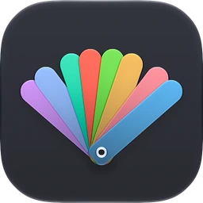
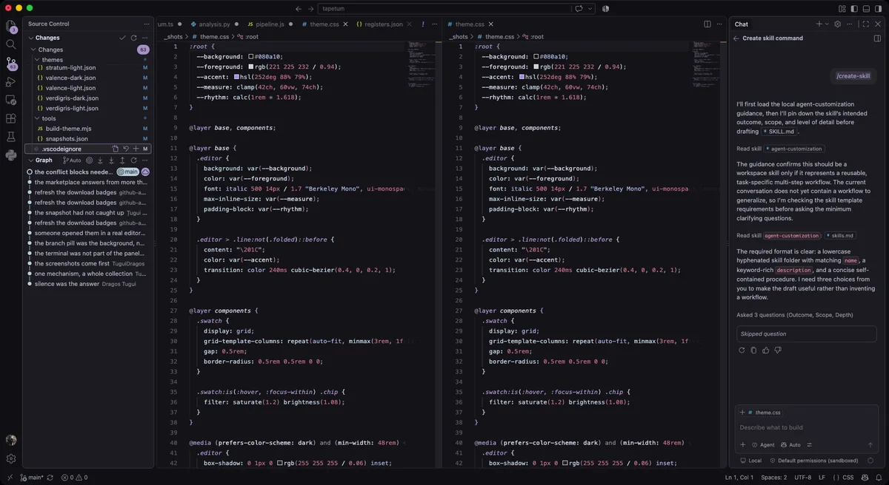
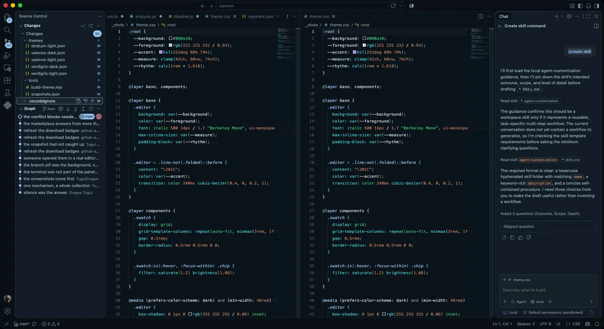
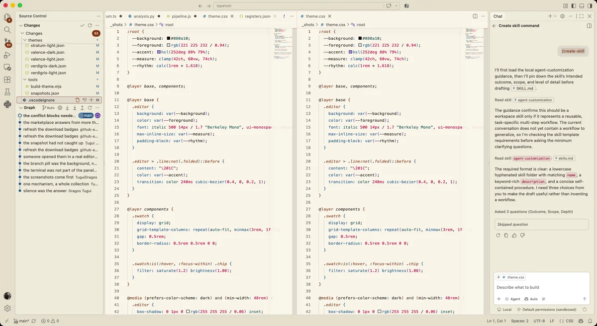

58 themes. 28 families.
Each family in a dark and a light variant, plus a high contrast pair for Coherence.

58 themes for VS Code and Open VSX.
Palettes placed by hand, every color measured on the surface it sits on. 28 families, each dark and light, plus a high contrast pair.
VS Code 1.99 or later, and the editors built on it · Free, MIT License
code --install-extension tuguidragos.tapetum

Almost every animal that hunts at night carries a mirror behind its retina. Light that would have passed straight through is thrown back for a second pass, so almost none of it is wasted. The mirror is called the tapetum lucidum, and every animal throws back its own color.
Green in cats, blue in horses, red in alligators, white in spiders. You also spend your nights looking at light. This is a collection of ways to throw it back.
Each family in a dark and a light variant, plus a high contrast pair for Coherence.
Every syntax color clears 4.5 to 1 against its own background, and comments clear 4.0.
Grammar, provenance, borrow, effect, signal and tone.
Every key VS Code 1.140.0 registers, chat and agents included, but the few it reads as switches.
The closest pair of families still averages 12 dE apart.
Every palette was placed by hand, and the interface colors follow from it by rules that measure them.
VS Code and 9 editors built on it, from VSCodium and Cursor to Positron and Kiro.
Families
Each one is drawn from something in the physical world that emits or bends light. Pick one to read where it comes from, and see it on real code, dark and light.
Selenium toning. Hue rotates as tone drops
Selenium toning shifts the blacks of a silver print toward purple and stretches the tonal range at the same time. The result is an image that is warm in the shadows and cool in the highlights at once. So this family does not pick 6 separate hues. It picks a ladder of lightness and lets the hue rotate as the ladder descends.
#14131A#D6DEEC#B1A2D0#BDD4E0#A7BBDE#BD86AD#D17F90#D58075#807A8A#F5F2F0#1E1C22#60537D#31454F#3A506E#865277#9F5263#A7564E#736C7CThe depth at which each color dies underwater
Water eats color by depth. Red is gone by 5 meters, orange by 20, yellow by 50, green by 100, and below 200 there is only blue. Hadal makes that the rule: the colors that survive deepest get the most light and the most saturation, and the ones that die shallow are left faded on purpose. The red is almost gray, and it should be.
#04131C#C6DCE1#97CCF2#0FCDD2#0CC681#B69F4B#CB8661#CA828B#768B90#F6FAFC#152225#0A587B#0E6365#0A6D46#76630E#915431#9F5B66#586C71Which code touches the world and which only computes
Pure code and code that touches the world look identical in every theme. Here they do not. Await, async, throw, catch and every mutation burn. Functions that only compute, the types, and the data stay cold. It is the same idea a type system uses to track effects, except you can see it without reading a signature.
#07100D#C6D2CC#6E8079#5FD8C0#93B4CA#8E9CBE#FF5C4D#FFA03C#6E7B76#F3F8F5#1D2622#5E6E68#0A6E5E#2E5C78#3E4E80#C22A18#9A5200#65736EThe effect scheme decides what each slot paints, so a slot’s name is not the role it colors here.
A dichroic filter. 2 hues in the whole of the code
A dichroic filter absorbs nothing. It splits. What passes through has one color and what reflects has exactly its complement, and there is no third. Structure travels through the filter and takes the teal, data reflects back and takes the magenta. That is the whole palette. The terminal is the one place that breaks the rule, because red and green have to stay red and green.
#07110F#C4D2CE#3FE8BE#14BFA0#FA7DC8#31A892#F658AE#E968AB#728781#F5EEF3#1E2321#065246#076659#850752#097869#AC136E#BD327F#606F6BCarminic acid, the first real scarlet Europe had
Cochineal is a scale insect that lives on cactus, and carminic acid is what it makes to keep ants away. It gave Europe its first true scarlet, worth close to silver by weight, and it took about 70000 insects to make a pound of dye. The background is the crimson sunk into the cloth, the syntax is the same dye at different strengths.
#1C0A0F#EDD6DA#F98794#FFA6B6#E8B54A#8FC9A4#FF8A5C#B49BE8#9A7A82#FBF2F3#2A161B#B01238#8A2050#8A5A00#1E6A46#A64414#5B48A0#7C6268Rayleigh scattering. Blue reflected, amber transmitted
Aerogel is 99 percent air and scatters short wavelengths the same way the sky does. Look at a block against a dark background and it is blue. Hold it up to a lamp and the light that gets through is amber. Same material, 2 colors, so the dark variant is the reflection and the light variant is the transmission. This is the only pair here that comes from 1 physical fact rather than 2.
#0A0D12#C6D8DF#F2A47A#54B2F2#0ED8D8#A187E9#F27884#66A567#75888F#FBF6EC#251C18#913E0A#0F638F#0B5A5A#6D57B4#C40A43#39773D#74645DInterference on anodized titanium
Anodized titanium has no pigment in it at all. The color is an oxide layer a few hundred nanometers thick, and which color you get depends only on the voltage: bronze around 20 volts, violet at 30, blue at 40, gold at 70. The metal underneath never changes. Anodise is the quietest family, all interference and no dye.
#0C0C0D#E2E2E4#E8B54A#75ADE2#46C7C2#39B871#E07A45#C77DD8#7E7E82#F8F8F9#1D1D20#8A5A00#2A5FA8#0E6E8A#22683F#B0501F#8A3D9E#66666AWhether a thing can change, and where it is written to
Rust made a whole language out of one question: can this change, and who is allowed to change it. Borrow puts that question on the colors. Constants and anything read only are cold. Reassignable variables are warm. Parameters are borrowed, so they are green and italic. And at the exact point where you write into a variable, the name lights up. You stop looking for mutation and start seeing it.
#12151A#C8CDD6#64AEF9#EAECF0#66C070#A585EC#F09A18#FA6362#767D89#F5F6F9#22262E#0C5FA8#141820#2C6620#6A2FC0#9A5A00#C00A18#6B7280The borrow scheme decides what each slot paints, so a slot’s name is not the role it colors here.
Sonoluminescence, the flash of a collapsing bubble
Drive a bubble in water with sound and it collapses in under a nanosecond, reaching temperatures people still argue about, and emits a flash of light. Nobody fully agrees why. The flash is blue white and almost too fast to measure. Cavitation is the quietest palette in the collection, cold and low in chroma, with 1 hot color for the core.
#05070B#C3D4DB#40D0ED#7CACDD#5CB8A5#CE8C54#F955AB#D0A4DB#72858C#F8FAFD#162227#0C5B6A#3C709E#0B6355#8F5621#CC0C82#724A7D#5A6C73A reactor pool. No warm color in the code
A particle moving faster than light does in water drags a shockwave of light behind it, and that is the blue glow in a reactor pool. The intensity rises as 1 over lambda squared, so the shorter the wavelength the stronger it gets, which is why it looks violet blue. There is not a single warm color in the code, because the physics does not produce one. The terminal keeps its red and yellow, and so do the error and warning marks, because those have to mean what they have always meant.
#061527#CADEE6#EE7DFA#3AB2F8#0DE6D6#4FBE6F#15C6EC#BCC2F2#798C93#F5F8FD#152125#B61CCB#0C75A9#0A3934#0C7638#0D6377#0B4496#586B71Mineral pigments ground before synthetic chemistry
Before synthetic chemistry, color was something you dug up and ground. Cinnabar is mercury sulfide and gave the vermilion of Pompeii. Orpiment is arsenic and was the only clean yellow for 1000 years, poisonous enough that painters avoided mixing it with lead. Malachite, azurite and lapis came out of the same kind of rock. Warm and heavy, because pigment is.
#100C09#DED2CD#F28F83#47AFFA#0CCEA0#F2BA24#FA54AC#9C86F5#90827B#FAF7F0#251D19#BC0D22#0A699D#0C644C#674D0A#CB0B82#6254D1#72655E6 lines from 1 argon and krypton ion laser
A mixed argon and krypton ion laser puts out 6 visible lines from 1 tube at once, which is what a white laser actually is. Argon gives 457.9, 488.0 and 514.5 nm, krypton gives 413.1, 568.2 and 647.1. Every color in the code is one of those lines. There is no magenta anywhere in it, because magenta is not a spectral color and no laser can emit one, so the terminal's magenta slot carries the krypton violet instead. The interface falls to true black so the only thing emitting on the screen is the code.
#040406#C9CED6#16DFF4#C891F9#0EF477#F4D00C#F46B57#4E97F4#7D8189#FDFDFE#16181C#0A5B64#7C39C4#0A6830#716008#CF151A#0C67B5#63676E#000000#FFFFFF#12EBFF#E9C3FF#10FF7D#FFE20E#FFA05C#BAD2FF#9F9F9F#FFFFFF#000000#00616C#6F00F5#006727#695500#B50005#0059A6#686868A silicon wafer and real LED emission peaks
A polished silicon wafer is a dark mirror with a violet cast, and that is the background. The syntax colors are the real emission peaks of the materials grown on top of it: GaN at 405 nm, InGaN at 450 and 505, GaP at 555, AlGaInP at 590, AlGaAs at 660. The light variant is lit the way a cleanroom is lit, in yellow, because photoresist cannot see that end of the spectrum.
#15151C#D7DCE5#77ABF9#13C5B5#F2C17A#60D53D#F2726E#C771F8#838A96#FBF9F0#251F19#0A66B2#0C6A61#6E4C0A#1F660B#CF0B30#9841CD#71675EAbsorption lines in sunlight
In 1814 Joseph von Fraunhofer pointed a prism at the sun and found hundreds of dark gaps in the spectrum. They are elements in the sun's own atmosphere eating their own colors on the way out. He labeled the strongest with letters and those letters are still in use. Fraunhofer is the brightest family here, built around the sodium D line, the hydrogen alpha and the magnesium triplet.
#080A10#DDE1E8#AF9CF9#4FC3F7#7CE85C#00E5C0#FFC93C#FA6245#727A88#FBFAF6#1B1D22#3A2FC9#0D6FA8#3D7A1F#007A66#9A6A00#C13A1A#6A6C70Compressed glacier ice. Nothing in it is black
Glacier ice is blue because pressure squeezes the air bubbles out, the light path gets long, and red is absorbed on the way through. The older and more compressed the ice, the deeper the blue. Nothing in this family drops to black, not one surface, because nothing in a crevasse does either. The warm colors are the sun on the surface and the rock band running through it.
#1A2733#DCEAF2#0ECCCB#9BD0F6#6BECBE#AEA0F0#F6B464#F67F87#8AA0B0#F2FAFD#18262F#0A6B6C#0B5475#094B30#5461AD#804E08#BB4355#5E7382The temperature scale of hot steel
Heat steel and it tells you its temperature. Dull red around 600 degrees, cherry at 750, orange at 900, amber at 1000, almost white by 1300. Blacksmiths read it by eye and still do. In this family lightness is temperature, so the ladder is not an aesthetic choice, it is the scale. The 1 cold color is the blue at the base of the forge flame.
#0C0806#DDCFCD#E8CC6A#F2A854#F88A63#F7616A#F95A93#12A3E0#907F7D#FAF6F2#251C1B#574A0A#7A4B0A#AE350A#D40B3B#D30B6B#0F6A92#746461Light made by living things
Living light is nearly always blue green, because that is what travels furthest through seawater. Dinoflagellates glow at 480 nm and turn a breaking wave into a line of fire. Jellyfish green fluorescent protein sits at 509 and won a Nobel prize for being useful. Fireflies are further toward yellow. The red is the rarest thing here: 1 Brazilian beetle larva, the railroad worm, is the only land animal known to make it.
#04090C#C4D5D4#11D9A9#AEBD0F#3AB2F2#9291F2#FA6051#1BA4AF#728786#F5FAFA#172221#0C5E48#565D0B#0C658E#3657DD#D70E21#0F737B#5A6C6BA scraped and rewritten manuscript
A palimpsest is a parchment scraped clean and written over, with the old text still faintly readable underneath. Keywords, imports, punctuation and type annotations are the scraped layer here, pushed back toward the background. The names you chose and the data you wrote are the new text. Roughly 2 thirds of the screen recedes on purpose.
#191612#E8E1D2#8A8173#F5EEDE#D9A94A#A19788#D9A94A#D68164#837A6C#EDE4CE#2A241A#6B6352#16120C#7E5B0E#6A6250#7E5B0E#8A3A22#716A58The signal scheme decides what each slot paints, so a slot’s name is not the role it colors here.
The mat around a framed photograph
A passepartout is the card mat around a framed photograph. It is not decoration, it is what makes the eye fall on the picture. Every theme puts the interface at the same brightness as the editor or darker. This one inverts it: the mat is far lighter than the plate, and the editor sits inside it as the print.
#08080A#DEDCD6#D8A83C#E4DFD2#B8A88C#A8B0A0#D89A6A#C0A0B8#83807A#FDFDFB#1F1E1A#8A5F12#26241E#5A5038#3E5040#8A4A18#6A3E62#6E6A60Oscilloscope phosphor decay
Oscilloscope phosphors are graded by how long they keep glowing after the beam has moved on. P1 is the willemite green everyone pictures, P7 goes blue then fades to a long yellow ghost, P11 is the blue used for photographing traces. Persistence is the green one, and the warmer colors are the ghost that P7 leaves behind.
#0A0B09#DCE0D8#7FE33F#8FB8FF#FFB742#4ECFC0#FF6B4A#B79BFF#7C8178#F7F8F4#1C1F1A#3D7A14#1A6E96#8A5A00#00786B#B8402A#6B3FA8#676A63Where each symbol came from
Every theme in the world colors by grammar. This one colors by where a symbol came from. What you defined here is gold and bold. What the language handed you is cyan and italic. What cannot change any more is violet. The rest of your own code is a single color, and the keywords are deliberately dimmed, because you already know that function is a function. Open a file and you see instantly what is yours and what is borrowed.
#191B20#C6C8CC#8E939E#F0B75A#9EB096#A8B8A0#B9A6E8#6FC7E0#7C808A#F4F2ED#2E3036#6A6E76#855606#4A5C42#5A6C52#5B48A0#0F6480#70747CThe provenance scheme decides what each slot paints, so a slot’s name is not the role it colors here.
Emission lines of heated gases
Heat a gas and it does not glow across the spectrum, it glows at a handful of exact wavelengths and nothing in between. Hydrogen gives you 4 visible lines, neon gives you a fistful of reds, mercury a violet and a green so specific they are still used to calibrate instruments. Quantum takes its violet, blue and teal from that idea: a small set of exact positions rather than a smooth range.
#0B0E1A#C8D3F5#CD8FF9#8AB4FF#4DE0D0#6EE7A8#FF9F45#FF6E9C#6E769E#FAFBFF#24294A#7B2CBF#2B5FD9#0A7570#06704A#C25100#C42B7B#6D7291The 6 spot inks you can order for a duplicator
A Riso duplicator does not mix color. It pulls 1 pass per ink and lays them over each other, slightly out of register. The inks come from a fixed catalog you order by name, and the fluorescent pink is impossible to mistake for anything else. These are 6 of them, printed on kraft.
#16130E#E8E2D4#FA80BB#FFEE3C#3FC97E#5FBCC4#FF7F42#A289DB#847C6C#F5F0E4#211E16#C4157E#7A6000#0A6E42#0E6068#B4470E#5A4694#7C7462A darkroom under an OC filter
Photographic paper cannot see the deep amber of an OC filter, which is why it is the only light you are allowed to switch on in a darkroom. You learn to read everything from one color and how bright it is. Safelight works the same way: the code is a single amber in 4 intensities, and the only real color in it is the red of the filter itself, kept for literals.
#2A1A0D#F0DCBE#FFF6E4#EBD3AE#FA8D6A#CFB48A#FF9463#B39970#9C8665#EDE6D6#2C2318#1A130A#463A26#A83A16#6A5A3E#8A3D12#706043#75664AA silver stylus on prepared paper. Gray code, hue kept for signals
Silverpoint is drawing with a silver stylus on prepared paper. There is no color, only line and tone, and no way to erase. Leonardo and Durer worked in it. This family keeps hue out of the syntax: 6 grays, plus weight and italic doing the work that color usually does. Hue is left for signals: errors and warnings, the 2 sides of a merge conflict, every third bracket level, and the single silver blue accent that helps you find your cursor.
#1A1A1C#D2D2D6#AAAAB0#F0F0F4#BEBEC4#AAAAB0#C8C8CE#97979D#7E7E84#E8E6E1#26262A#5E5E64#141418#3E3E44#4E4E54#2C2C32#64646A#6C6C72The tone scheme decides what each slot paints, so a slot’s name is not the role it colors here.
Sedimentary layers. Color sits on nesting depth
A road cut through sediment is read by depth, not by content. Each band is a different million years. Stratum takes the color off the syntax entirely and puts it on nesting depth: the code itself is 1 sandstone in 6 tones, and its 3 real colors are spent on bracket levels and indent guides. You see how deep you are without counting.
#14110D#E4DACA#BFA77B#F5E9CE#D8C298#A7946E#D2BC94#A69574#7F7667#EFE9DC#241F16#5C4E32#1E1808#3E3418#6E6040#31280F#6F6141#77705EThe tone scheme decides what each slot paints, so a slot’s name is not the role it colors here.
Transition metals dissolved in water
Dissolve a transition metal and the water takes its color. Permanganate is a violet so intense a few grains stain a liter, dichromate is orange, copper is sky blue, nickel green, cobalt chloride a deep blue that turns pink when it picks up water. These are transmission colors, not emission, which is why they read deeper and heavier than the rest of the collection.
#0B090E#D4D1DC#F976E7#12B6E8#20D12E#F2B486#F46469#6E90FA#85828F#FCFBFD#222128#B70CA8#0B6886#0B6912#81440A#D20B38#0C68DF#6B6874What copper turns into as it corrodes
Copper does not corrode into one color, it corrodes into a catalog. Verdigris is the blue green of an old roof, malachite the deeper green of the ore, azurite the blue, cuprite the brick red of the first oxide layer, bornite the purple tarnish that gives peacock ore its name. Brass sits underneath as the metal before any of it happened.
#0D0B08#DBD2CE#0FCBB7#B09BFA#E4BF39#41BF76#F46577#2AA2C8#8F817D#F7F4ED#211B18#0C6157#6354B0#5F4E0B#0B6A3A#BE2A49#0C728F#70635FColored by each theme’s own file, the way VS Code paints a file before a language server answers. Provenance, Borrow and Effect also read the language server, so in VS Code they show more.
In VS Code
Screenshots of 6 families in VS Code, with two editors side by side, the source control view, and the chat.

Tapetum Hadal
Light variants
A color that reads clearly on black is often unreadable on white, and the reverse holds just as firmly, so every light palette was placed by hand and measured on its own ground. Same families, same sources, different physics.

Aerogel is blue against a dark background and amber held up to a lamp, so its dark variant is the reflection and its light variant the transmission.
Schemes
Almost every theme answers a single question: what kind of symbol is this. Tapetum ships that one and 5 others, and the answer is a property of the theme, so changing theme changes the question.
22 families
What kind of symbol it is. The classic, and what nearly every theme does.
1 family
Where the symbol came from. Gold and bold for what you wrote here, cyan and italic for what the language handed you, violet for what cannot change. Keywords are dimmed, because you already know function is a function.
1 family
Whether a value can change. Cold for frozen, warm for mutable, green and italic for borrowed parameters, and a name lights up at the exact point you write to it.
1 family
Whether a line touches the outside world. await, async, throw and every mutation burn. Pure computation stays cold.
1 family: Palimpsest
Signal against boilerplate. Keywords, imports, punctuation and type annotations are scraped back toward the background. Only the names you chose and the data you care about stay lit.
2 families: Silverpoint and Stratum
Nothing at all. No hue in the code, only 6 tones plus weight and italic.
3 of these, provenance, borrow and effect, read the semantic tokens of your language server, and fall back to grammar rules when none is running.
Checked
Color is a judgment call, so every palette was placed by hand. What a machine is good for is catching what a person misses, on all 58 variants.
Every syntax color against its own background, and interface text against the surfaces VS Code’s stylesheets pair it with. Syntax clears 4.5 to 1, comments and struck-through deprecated symbols 4.0, and interface text 4.5.
CIEDE2000 between every pair of colored roles, and between every pair of families, so no 2 look like each other.
All 987 color keys VS Code 1.140.0 registers and has not deprecated, including chat, agents, inline edits and the modern tab surfaces, except the few it reads as switches.
Verified on the current VSCodium, Cursor, Devin, code-server, Positron, Kiro, Trae and Antigravity, on the last Void build, and on VS Code 1.140.0 for macOS, Linux and Windows.
node tools/analyze.mjsnode tools/audit.mjsnode tools/paint-check.mjsnode tools/compare.mjsInstall
Or install it from the VS Code Marketplace, or from Open VSX, the gallery VSCodium, Kiro, Trae, Antigravity and code-server install from, and Positron through its mirror. Cursor and Devin run galleries of their own.
code --install-extension tuguidragos.tapetum
Press Cmd K then Cmd T, or Ctrl K then Ctrl T on Windows and Linux, and type a family name to filter.
Each dark variant is named Tapetum and its family, like Tapetum Hadal, and each light one adds Light, like Tapetum Hadal Light.
Set workbench. to Tapetum Coherence High Contrast to keep Tapetum when the system asks for high contrast.
Make one your own
Any color can be overridden per theme in your settings, without forking anything.
{
"workbench.colorCustomizations": {
"[Tapetum Quantum]": {
"editor.background": "#080B14"
}
},
"editor.tokenColorCustomizations": {
"[Tapetum Quantum]": {
"comments": "#7580AD"
}
}
}Tapetum is a free collection of 58 color themes for Visual Studio Code and the editors built on it: 28 families, each in a dark and a light variant, plus a high contrast pair for Coherence. Every palette was placed by hand, and every color is measured on the surface it sits on.
Run code --install-extension tuguidragos.tapetum, or install it from the VS Code Marketplace or Open VSX. Then press Cmd K then Cmd T, or Ctrl K then Ctrl T on Windows and Linux, and type a family name.
VS Code 1.99 or later on macOS, Linux and Windows, and the editors built on it. It is checked one by one on the current VSCodium, Cursor, Devin (formerly Windsurf), code-server, Positron, Kiro, Trae and Antigravity, and on the last Void build.
No. A color that reads clearly on black is often unreadable on white, and the reverse holds just as firmly, so every light palette was placed by hand and measured on its own ground.
Yes, Coherence comes in a high contrast pair. When the system asks for high contrast, VS Code switches to a high contrast theme of its own; set workbench. to Tapetum Coherence High Contrast and workbench. to Tapetum Coherence High Contrast Light to keep Tapetum.
They read the semantic tokens your language server emits, not only the grammar. They fall back to grammar rules when no server is running, so open a real file rather than a scratch buffer the first time you try one.
Yes. Any color can be overridden per theme in your settings, with workbench.colorCustomizations and editor.tokenColorCustomizations, without forking anything.
Yes. The README has a block for your settings that switches italic off in all 58 themes at once, and says what stays in each scheme once italic is gone.
Yes. Tapetum is free and open source under the MIT License.
Free and open source, under the MIT License.
code --install-extension tuguidragos.tapetum